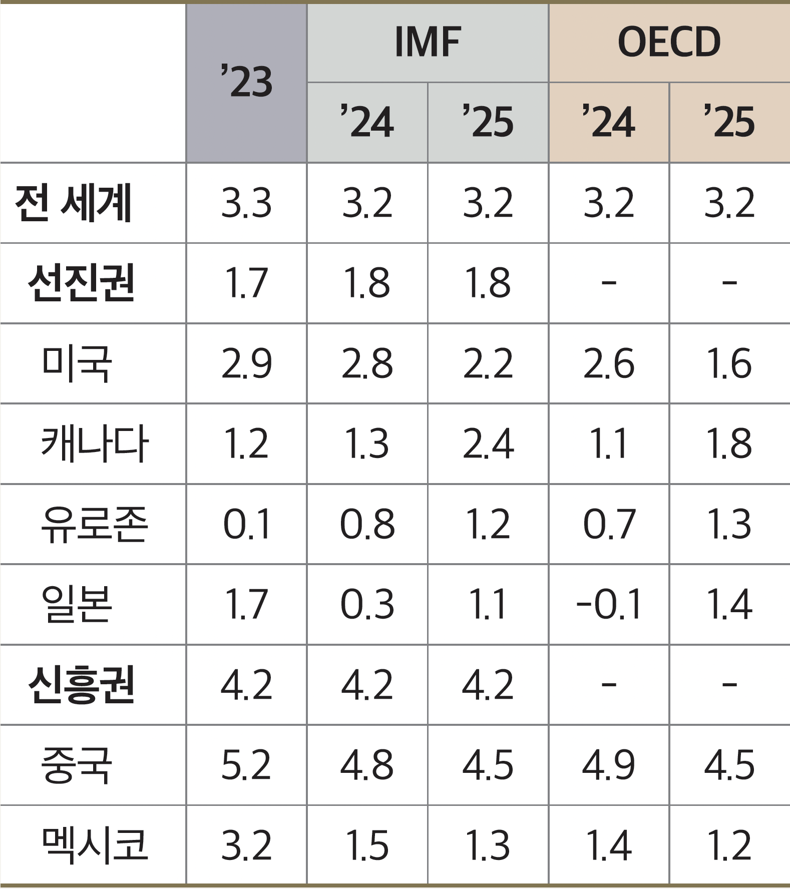
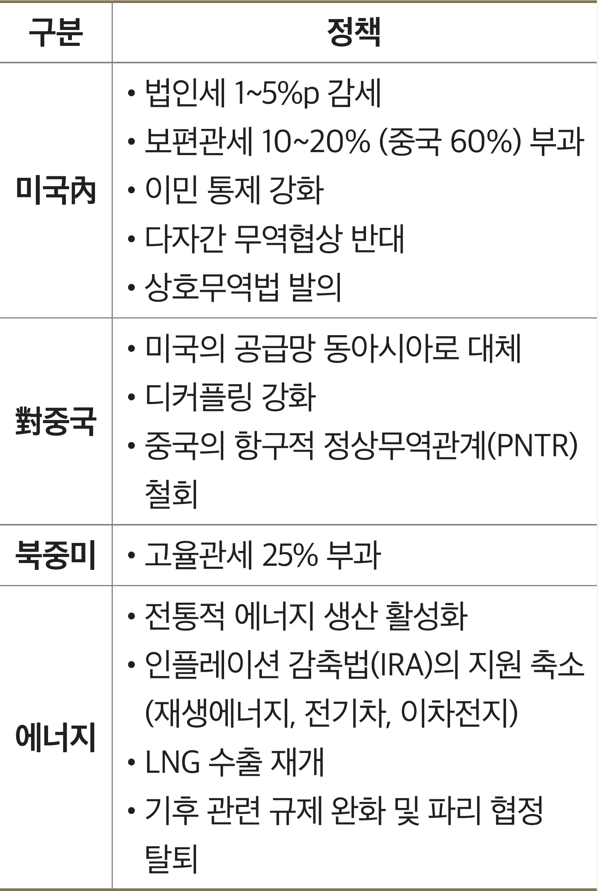
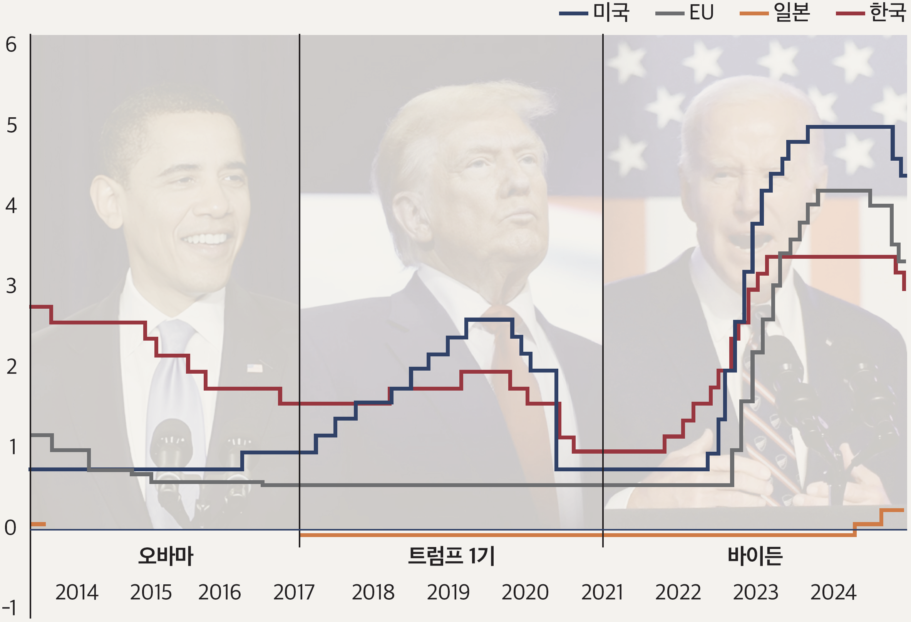
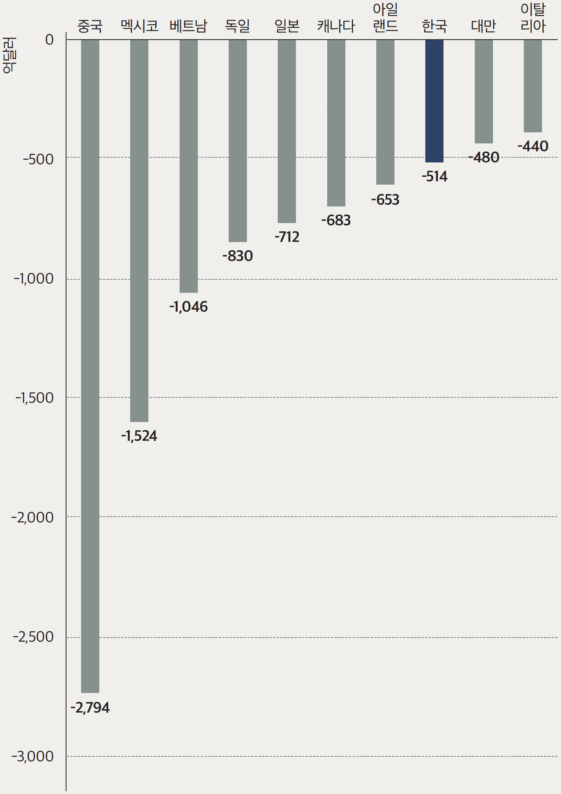

2025년 경제·경영 환경 전망
트럼피즘 2.0의 물결이 변화시킬
2025년 세계 경제
2025년 세계 경제의 흐름에 영향을 미치게 될 주요 상·하방 리스크와 함께 해당 리스크에 따른 영향이 세계 교역과 산업 분야에 미치는 영향에 대해 알아본다.
글 한국경제연구원 이승석 책임연구위원, 황인욱 연구위원, 유민희 연구위원
주요 기관 세계 경제성장률 전망치
 자료: IMF World Economic Outlook(2024. 10.), OECD Economic Outlook, Interim Report(2024. 9.)2025년 세계 경제성장률은 3% 초반 수준에 그칠 전망이다. 주요국을 중심으로 디스인플레이션과 통화 정책 완화 효과가 긍정적으로 작용하고 IT 산업을 중심으로 제조업의 개선도 예상되지만 성장률이 기대치에 미치지 못하는 이유는 트럼프 재집권에 따른 불확실성 확대 때문이다. 바이든 행정부의 디커플링(Decoupling) 정책으로 미국 중심의 세계 경제에 대한 밑바탕이 마련된 가운데 트럼프의 미국 우선주의가 공약을 통해 예고한 대로 이행된다면 미국의 독주체제는 극단적 양상으로 견고해질 전망이며, 동시에 세계 경제가 맞게 될 충격과 혼란은 매우 클 것으로 예상된다.
트럼프 주요 공약
 자료: 트럼프 공약집(2024)트럼피즘 2.0, 주요 상·하방 리스크
대선공약을 통해 드러난 트럼프 2기 정책의 핵심은 강력한 미국 우선주의와 전면적인 보호무역주의다. 미국 내부적으로는 감세(법인세 1~5%p 감세)와 이민통제 강화가, 대외적으로는 모든 수입품에 10~20%의 보편관세를 부과하고 최대 경쟁국인 중국에 60%의 고율관세 등을 통해 강력한 압박을 가하겠다는 것이 핵심이다. 특히 안보상의 이유로 중국산 핵심 기술이나 부품이 적용된 재화는 대미 수출에 문제가 생길 수도 있다. 이 외에도 전통적 에너지 생산 활성화를 통해 미국의 에너지 수출을 늘리고, 인플레이션 감축법(IRA)에 대한 폐기 가능성을 시사하며 한국의 완성차 업체들에 위기감을 형성하기도 했다. 다만 IRA가 폐기되기보다 미국 기업에 우선적으로 혜택이 주어지는 가운데 외국 기업에 대한 혜택은 줄어들 가능성이 높다는 것이 전문가들의 의견이다. 이와 같은 조치들은 트럼프 취임 후 100일 이내에 신속히 추진될 가능성이 높다. 감세로 인한 세수의 부족을 관세로 메우겠다는 것이 1차적인 목적이기 때문이다. 급격한 변화에 맞서 준비태세를 갖출 시간이 매우 촉박한 가운데 세계 경제에 심각한 혼란과 무역 분쟁이 조기에 점화될 수 있는 가능성이 높은 상황이다.
트럼프의 정책들로 인해 세계 교역뿐만 아니라 주요국 중앙은행들의 피봇(Pivot) 흐름 지속 여부도 불투명해질 전망이다. 미 연준은 2024년 9월에 이어 11월까지 두 차례 FOMC 회의를 통해 4.75%로 0.75%p 인하했고, 유럽중앙은행(ECB)은 미 연준에 앞서 선제적으로 기준금리를 인하한 바 있다. 한국은행 역시 기준금리를 기존 3.50%에서 3.00%까지 내린 상황이다. 다만 트럼프의 감세, 관세 부과, 확장적 재정 정책 등은 인플레이션을 유발할 수 있으므로 정책 이행의 효과가 나타나기 시작하면 미 연준은 다시 금리 인상을 고민해야 할 상황에 직면하게 될 수도 있다. 물가 상승 압력을 높일 수 있는 트럼프의 정책들에 의해 통화 정책의 불확실성이 가중될 수 있다는 것이다. 미국 피터슨국제경제연구소(PIIE)의 아담 포젠 소장은 한경협이 미 대선 직후 주최한 컨퍼런스에서 미 연준이 금리 인하를 중단하고 2025년 내에 6차례 이상 금리 인상을 단행할 수 있음을 주장하기도 했다.
주요국 기준금리 추이
 자료: 한국은행
하방 리스크에 비해 부각되진 않지만 주목할 만한 상방 리스크도 있다. 지속적인 발전을 거듭해온 인공지능(AI)은 최근 발전 속도가 가속화되고 있으며, 이에 따라 금융·의료·산업 현장은 물론이고 일상생활에까지 빠르게 스며들며 수요가 증폭되고 있다. AI 관련 산업의 발전과 도입은 생산성을 증대시키며 향후 글로벌 제조업 경기를 개선해나갈 것으로 전망된다.
한편 트럼프로 인한 불확실성 심화는 세계 경제에 혼란을 초래하겠지만, 감세와 규제 완화 등 일부 정책은 일정 시차를 두고 기업의 투자심리 제고와 가계의 소비 증대를 통해 제한적이나마 세계 경제에 긍정적인 요인으로 작용할 수 있으리라 기대된다.
세계 교역: 제재가 집중될 대미 무역 흑자 3국(중국, 캐나다, 멕시코)
위에서 살펴본 바와 같이 트럼프의 통상정책은 미국 우선주의를 표방한 보호무역 정책이다. 이와 같은 통상 정책 기조는 세계 주요국들에 균일하지 않은 영향을 미치며, 전 세계 교역 규모를 위축시킬 것으로 보인다. 가장 귀추가 주목되는 국가는 대미 무역수지 흑자 1위국인 중국이다. 트럼프는 1기 행정부 시절 지식재산권 문제로 중국과의 패권 전쟁을 시작한 이래, 2기 행정부에서는 60% 이상의 고율관세를 포함한 전방위적 압박을 가할 것임을 예고했다. 이에 따라 부동산 시장 침체, 지방정부 부채 문제 등 구조적 악재로 부진의 늪을 헤어나지 못하고 있는 중국 경제의 어려움은 더욱 심화될 것으로 예상된다. 골드만삭스는 트럼프의 무역제재로 인해 2025년 중국의 경제성장률이 0.7%p 하락할 것으로 예상했으며, 천문학적 규모로 진행되고 있는 중국 정부의 경기부양책도 효과를 거두지 못하게 될 수 있다고 경고하기도 했다.
중국에 이은 대미 무역수지 흑자 2·3위국인 멕시코와 캐나다에도 관심이 집중되고 있다. 미국과 인접한 캐나다와 멕시코는 1994년 공식 발효한 북미 자유무역협정(NAFTA)을 통해 미국의 자본과 기술, 캐나다의 풍부한 자원, 멕시코의 값싼 노동력이 결합하고 지리적 이점을 활용해 거대한 경제블록을 형성한 것으로 평가됐다. 그러나 트럼프 체제에서는 이들 국가에 대한 제재 수위가 높아질 전망이다. 최근 트럼프는 취임일인 2025년 1월 20일 첫 행정명령으로 멕시코와 캐나다의 모든 제품에 25%의 고율 관세를 부과할 것임을 천명한 바 있다.
다른 주요국들도 트럼프의 무역 정책에 의해 타격을 입을 가능성이 높다. 다만 무역질서 재편에 따른 국가별 영향은 다소 차이를 나타낼 것으로 보인다. 미국과의 협상 결과에 따라 무역제재 강도가 달라질 수 있음은 물론 중국 등 주요 제재 대상국과 직접적인 경쟁 관계에 있는 국가의 경우 미국의 제재를 기회요인으로 활용할 수도 있기 때문이다.
“트럼프 2기 정책에 따른 불확실성이
세계 경제에 미치는 부정적 충격은
트럼프 1기에 비해 훨씬 강력할 것이다.
그러나 한국의 도움 없이는
미국의 제조업 재건도 어렵다는 자신감으로
협상과 딜을 통해
윈-윈 전략을 펼쳐나가야 한다.”
“트럼프 2기 정책에 따른 불확실성이
세계 경제에 미치는 부정적 충격은
트럼프 1기에 비해 훨씬 강력할 것이다.
그러나 한국의 도움 없이는
미국의 제조업 재건도 어렵다는 자신감으로
협상과 딜을 통해
윈-윈 전략을 펼쳐나가야 한다.”
미국 주요 무역 적자국 현황
 자료: 한국무역협회(2023년 기준)격랑을 맞게 될 산업: 에너지&인공지능
세계 교역뿐만 아니라 산업 분야 역시 격변을 피해가기는 힘들 것이다. 가장 큰 변화를 겪게 될 분야는 에너지 산업으로 예상된다. 트럼프가 바이든 정부 4년간의 탄소중립 정책을 대부분 원점으로 되돌릴 전망이기 때문이다. 바이든 정부는 환경영향평가를 이유로 LNG 수출을 중단한 바 있으나, 트럼프는 에너지부 장관 후보에 셰일가스 기업인 리버티 에너지(Liberty Energy)의 설립자 크리스 라이트(Chris Wright)를 지명함으로써 LNG 수출 재개를 통해 글로벌 에너지 시장에서 미국의 지배력을 회복하려는 의지를 보였다. 한편 트럼프가 바이든의 대표 정책이었던 IRA의 재생에너지 지원을 축소할 것이라 밝히면서 글로벌 재생에너지 기업들이 술렁이고 있다. 덴마크의 오스테드, 독일의 RWE 등 유럽 전력 기업들에 피해가 예상되자 주가는 하락하기 시작했고, 미국의 시장 상황도 마찬가지다. 이에 더해 트럼프는 IRA의 전기차와 이차전지 관련 혜택도 줄일 것으로 예상돼, 미국 내에서 생산하고 판매하는 배터리·전기차 업체들의 타격이 불가피할 것으로 보인다.
2025년 시장 규모가 폭발적으로 확장될 것으로 예상되는 가장 유망한 산업 분야는 단연 AI 분야일 것이다. 한국무역협회는 2030년 글로벌 AI 시장 규모가 현재의 4배가 넘는 8,267억달러에 달하게 될 것으로 예측했다(2030년 국내 AI 시장 규모는 글로벌 시장 규모의 1/54 수준에 불과). 글로벌 AI 시장을 주도하는 국가는 미국이다. Top 6 빅테크 기업인 구글, 마이크로소프트, 아마존, 엔비디아, 메타, 애플이 IT 시장 선도를 위해 R&D 규모를 2015년 2,387억달러에서 4배 이상 증가시키고 있다. 특히 이들 빅테크 기업들은 상위 AI 기업들에 대한 투자를 공격적으로 늘리고 있어 AI 시장의 패권 전쟁은 더욱 치열해질 전망이다. AI 시장은 기술과 인프라 구축 측면에서 진입장벽이 높기 때문에 기술 협력과 효율적 업무 분담을 위한 기업들의 대대적인 연합전선 구축이 시장의 대세적 흐름으로 자리 잡고 있다.
새로운 균형점에서 시작하게 될 2025년
트럼프 2기 정책에 따른 불확실성이 세계 경제에 미치는 부정적 충격은 트럼프 1기에 비해 훨씬 강력할 것이다. 트럼프 1기 정책은 세계 경제가 비교적 안정적 흐름을 보이는 가운데 진행됐던 것에 반해 트럼프 2기 정책은 고물가, 고금리, 국지적 전쟁 리스크 상황에서 전개돼 세계 경제에 미칠 파급효과가 매우 클 것이기 때문이다.
우리의 입장에서도 부정적인 요인들만 눈에 띄는 듯한 상황이지만 비관할 필요는 없다. 한국 기업의 높아진 위상을 감안할 때 한국의 도움 없이는 미국의 제조업 재건도 어렵다는 자신감으로 협상과 딜을 통해 윈-윈 전략을 펼쳐나가야 한다.
트럼프의 재집권과 동시에 시작될 2025년 세계 경제는 모든 부문에서 새로운 균형점으로 이동하게 되는 격변과 혼돈의 시기를 겪을 전망이다.